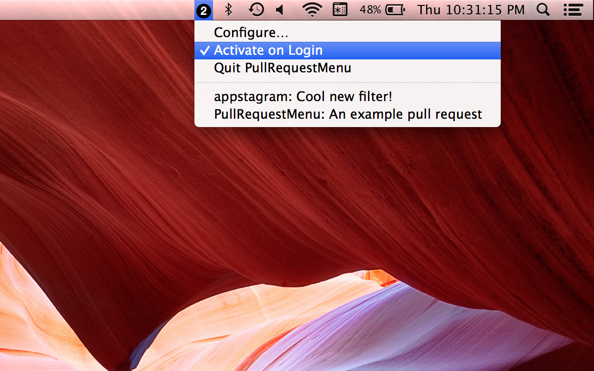
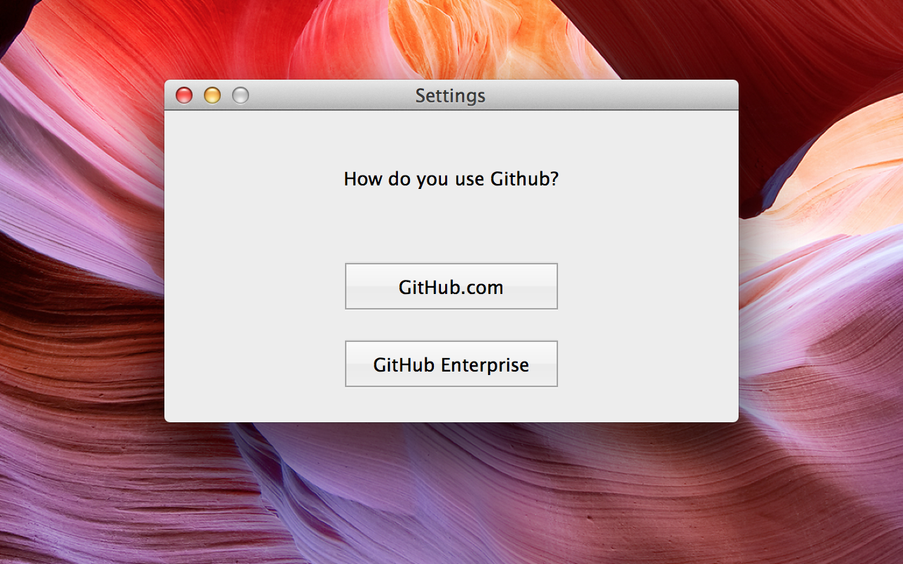
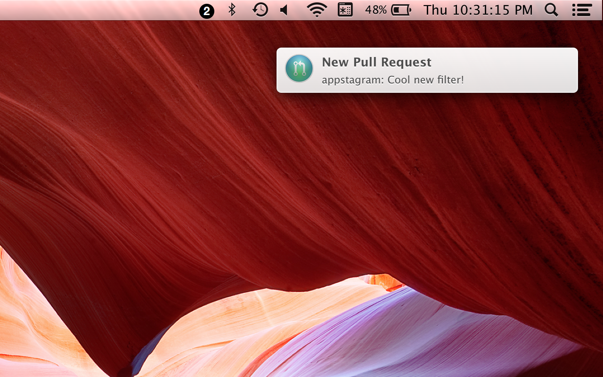

PullRequestMenu
A simple utility to quickly access your active GitHub pull requests.
Get it!

Works with public GitHub and with GitHub Enterprise installations.

Optional local notifications when you get a new request.

Get it!